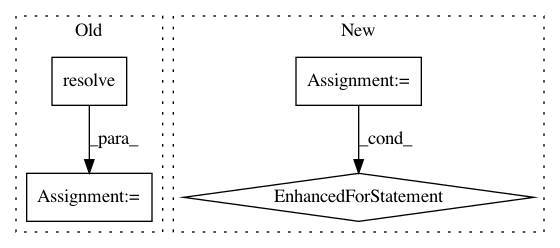

942f284052b22214d830c1bc2c8de03bffaa8d07,build_tools/azure/render_meta.py,,,#,8
Before Change
// We build from source on windows, otherwise, we looks for a wheel
if sys.platform != "win32":
wheel = next(file for file in os.listdir(str(DIST_PATH.resolve()))
if file.endswith(".whl"))
else:
wheel = None
// Numpy version is used for building
After Change
// conda puts a space between packages and versions, so we have to match that
requirements = []
with open(str(REQUIREMENTS_FILE.resolve())) as file:
for line in file:
requirement = line.strip()
match = re.match(r"^([A-Za-z\-0-9]+)", requirement)
_, match_end = match.span()
package = match.group(0)
version = requirement[match_end:].replace("==", "")
requirements.append(f"{package} {version}")
// Render and write the meta.yaml file to $ROOT/conda/meta.yaml
context = {
"requirements": requirements,
"VERSION": VERSION
}
In pattern: SUPERPATTERN
Frequency: 4
Non-data size: 4
Instances
Project Name: tgsmith61591/pmdarima
Commit Name: 942f284052b22214d830c1bc2c8de03bffaa8d07
Time: 2020-02-18
Author: aaronreidsmith@gmail.com
File Name: build_tools/azure/render_meta.py
Class Name:
Method Name:
Project Name: pantsbuild/pants
Commit Name: 0a6edd21b9ab29a1f733b90ff15092e7a03f665d
Time: 2014-01-15
Author: jsirois@twitter.com
File Name: src/python/twitter/pants/targets/python_target.py
Class Name: PythonTarget
Method Name: __init__
Project Name: pantsbuild/pants
Commit Name: 4ef7fdb8e7abc6ff952772c6b7a2f81d7a336af6
Time: 2014-10-15
Author: jinfeng@outlook.com
File Name: src/python/pants/backend/jvm/tasks/scalastyle.py
Class Name: Scalastyle
Method Name: execute
Project Name: pantsbuild/pants
Commit Name: 02f703665d2e6ce7282dd201bfcb33b3bb131f03
Time: 2014-01-30
Author: jsirois@twitter.com
File Name: src/python/twitter/pants/targets/artifact.py
Class Name: Artifact
Method Name: __init__